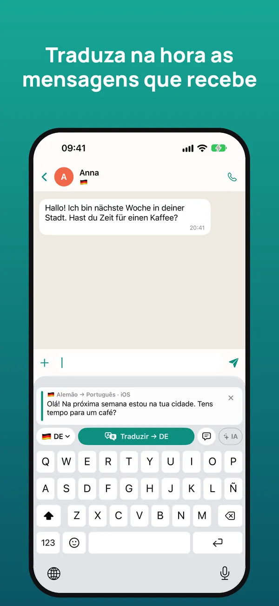
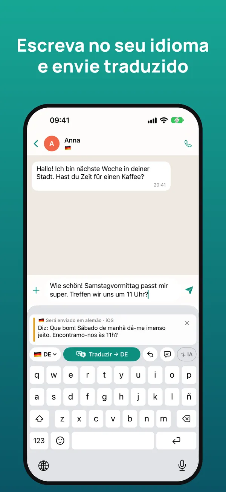
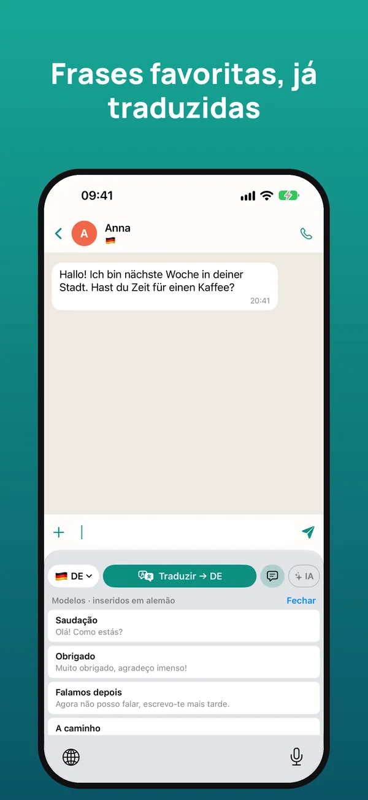
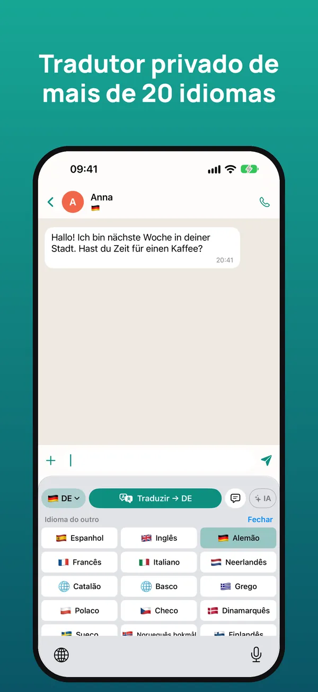

O teclado tradutor para conversar em qualquer idioma
Leia no seu idioma o que lhe escrevem e responda no idioma deles, dentro do WhatsApp, Telegram, Instagram ou de qualquer app. A tradução é feita no seu iPhone.
Experimente grátis durante 7 dias · iPhone com iOS 26 ou posterior

Como funciona
Mantenha premida a mensagem recebida e toque em «Copiar». O teclado traduz no momento para o seu idioma.
Escreva a resposta como sempre e toque em «Traduzir»: é substituída pela tradução, pronta a enviar.
Por baixo vê o que diz a sua mensagem no seu idioma, para a enviar com toda a tranquilidade.



Tudo o que precisa para falar com qualquer pessoa
Perceba as mensagens que recebe e responda no idioma da outra pessoa.
WhatsApp, Telegram, Instagram, Messenger, email… Funciona onde puder escrever.
Respeita o tom e o tratamento de cada idioma e tem em conta a conversa.
Tradução da Apple no próprio iPhone: sem ligação, sem anúncios, sem rastreio e sem contas.
Ligue a sua própria chave Claude, Gemini ou ChatGPT para traduções ainda mais naturais.
Modelos inseridos já traduzidos e um glossário para nomes e expressões, com iCloud.
Mais de 20 idiomas
Português, inglês, espanhol, alemão, francês, italiano, neerlandês, catalão, basco, grego, polaco, checo, dinamarquês, sueco, norueguês, finlandês, romeno, húngaro, ucraniano, russo, turco, árabe, chinês e japonês.
Preço
Escrever com o teclado é sempre grátis. Cancele quando quiser nas Definições do iPhone.
Perguntas frequentes
Funciona com o WhatsApp?
Sim. Funciona em qualquer app onde escreva: WhatsApp, Telegram, Instagram, Messenger, Gmail, LinkedIn e outras.
É grátis?
Tem 7 dias grátis. Depois, 2,99 € por mês ou 19,99 € por ano, ou 39,99 € uma única vez. Escrever com o teclado é sempre grátis.
Porque pede «Permitir acesso total»?
O iOS exige-o para que o teclado possa ler a mensagem copiada, usar a IA se a ativar e partilhar as definições com a app. Não guarda nem envia o que escreve.
Funciona sem ligação?
Sim. Com a tradução da Apple, depois de descarregar os idiomas, traduz-se no próprio iPhone sem ligação.
Que idiomas traduz?
Mais de 20, entre eles inglês, espanhol, alemão, francês, italiano, neerlandês, chinês e japonês.
Há versão para Android?
Por agora só está disponível para iPhone com iOS 26 ou posterior.
Comece num minuto
- Instale a app e abra o guia de início.
- Em Definições do iOS → Teclados, ative o teclado e «Permitir acesso total».
- Em qualquer chat, mantenha 🌐 premido e escolha o teclado.
- Copie a mensagem recebida para a ler traduzida; escreva no seu idioma e toque em Traduzir.
Precisa de ajuda? Escreva-nos para soporte@sherpastime.com.